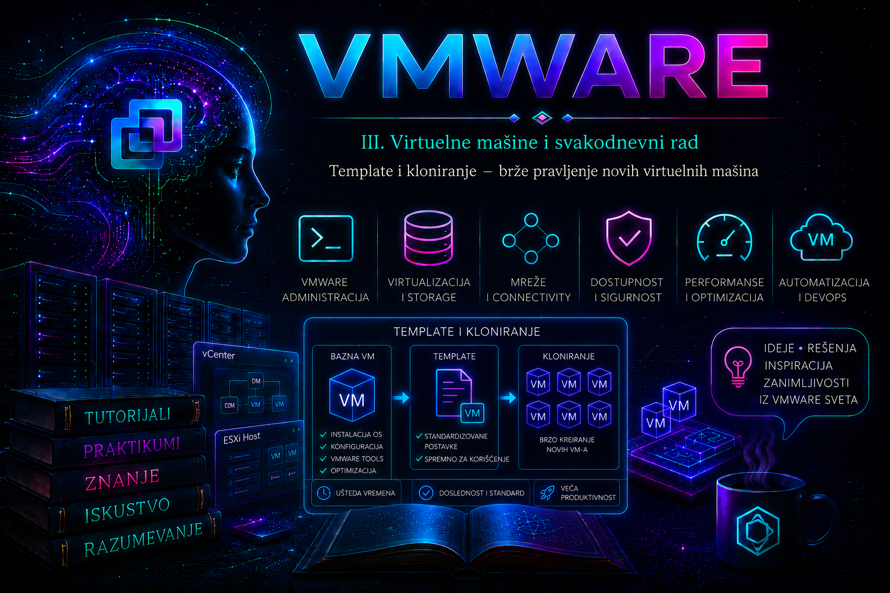

VMware

U prethodnim lekcijama upoznali smo virtuelnu mašinu, njen virtuelni hardver i ulogu VMware Tools paketa. Sada te elemente povezujemo u kontrolisan proces isporuke novih servera. U ozbiljnom VMware okruženju nije dovoljno da administrator ume da napravi jednu ispravnu virtuelnu mašinu: cilj je da stotu mašinu napravi jednako bezbedno, predvidljivo i proverljivo kao prvu. Template, kloniranje i Guest OS Customization zato nisu samo prečice u vSphere Client-u, već mehanizmi standardizacije, kontrole konfiguracije i smanjenja operativnog rizika.
Referentna slika operativnog sistema često se naziva golden image. Ona sadrži odobrenu osnovu operativnog sistema, ažuriranja, VMware Tools ili open-vm-tools, bezbednosne postavke i zajedničke agentske komponente. Od nje se pravi template, a iz template-a se raspoređuju nove, međusobno nezavisne virtuelne mašine. Standardizacija ipak nije isto što i slepo umnožavanje: svaka nova instanca mora dobiti jedinstven identitet, odgovarajuću mrežu, vlasnika, svrhu, politiku zaštite i dokumentovan životni ciklus.
Template, golden image i klon – pojmovi koje ne treba mešati
Golden image je organizacioni koncept: odobrena referentna konfiguracija iz koje se izvode sistemi određene klase. VM template je vSphere objekat koji tu osnovu čuva za ponovljivu implementaciju. Klasični inventarski template nastaje konverzijom VM-a, ne može se uključiti i, da bi se menjao, mora se vratiti u virtuelnu mašinu. Clone je nova virtuelna mašina nastala kopiranjem izvora. Kod standardnog potpunog klona odredišna VM nakon završetka zadatka ne zavisi od nastavka rada izvornog VM-a ili template-a.
| Objekat ili postupak | Primarna namena | Može da se uključi | Životni ciklus i važna posledica |
|---|---|---|---|
| Izvorna VM | Priprema slike ili kopiranje konkretnog sistema | Da | Ako je produkciona, kloniranje mora biti odobreno i usklađeno sa aplikacijom. |
| Inventarski VM template | Brzo raspoređivanje standardnih VM-ova u istom vCenter inventaru | Ne | Za održavanje se konvertuje nazad u VM, ažurira, validira i ponovo pretvara u template. |
| VM template u Content Library | Centralizovana distribucija i verzionisano održavanje | Ne direktno | U vSphere 7.0 i novijim izdanjima podržava check-out, izmenu i check-in nove verzije. |
| OVF/OVA template | Prenosiv paket za distribuciju virtuelnog uređaja | Ne | Nije isti tip objekta kao native VM template; mogućnosti implementacije i izmene se razlikuju. |
| Full clone | Nezavisna radna, razvojna ili test VM | Da, po završetku kloniranja | Troši kapacitet i vreme za kopiranje; identitet gosta mora biti personalizovan. |
Izraz linked clone ne treba predstavljati kao opštu opciju čarobnjaka savremenog vSphere inventara. Takav model zavisnih diskova pripada određenim proizvodima, API scenarijima i istorijskim rešenjima, a podrška zavisi od konkretne platforme. Za opšti vSphere administratorski postupak polazi se od potpunog klona ili implementacije iz template-a. Zavisni klon bez potvrđene proizvodne podrške nije preporučena prečica za produkciju.
Šta treba da sadrži, a šta ne treba da sadrži golden image
Dobra referentna slika je minimalna, ažurna, proverljiva i dovoljno opšta da može bezbedno da se personalizuje. U njoj se obično nalaze podržana verzija operativnog sistema, trenutna bezbednosna ažuriranja, VMware Tools ili distributivni open-vm-tools, standardni sertifikati poverenja, monitoring i bezbednosni agenti čije licenciranje dozvoljava kloniranje, podešavanje vremena, logging i osnovne administratorske alatke. Verzija virtuelnog hardvera i tip virtuelnih uređaja biraju se prema najstarijem ESXi hostu i odredišnim okruženjima na kojima slika mora da radi, a ne automatski prema najnovijoj dostupnoj vrednosti.
U referentnoj slici ne smeju ostati privatni ključevi namenjeni pojedinačnoj mašini, trajni tokeni za registraciju, aktivne aplikacione sesije, produkcioni podaci, jedinstveni monitoring identiteti, statička IP adresa koja će izazvati konflikt, niti tajne zapisane u skriptama. Linux sliku treba pripremiti prema pravilima konkretnog operativnog sistema i alata za inicijalizaciju, na primer cloud-init, bez nasumičnog brisanja identiteta sa produkcione mašine. Windows sliku treba personalizovati podržanim vSphere Guest OS Customization tokom implementacije; ručno pokretanje Sysprep-a pre template-a primenjuje se samo kada to zahteva dokumentovan proces i prethodno je testirano za konkretnu verziju Windows-a.
Projektovanje kataloga template-a
Jedan template za svaku aplikaciju brzo stvara nepregledan katalog, dok jedan univerzalni template obično postaje preopterećen i teško održiv. Razumna podela prati operativni sistem, glavnu verziju, bezbednosni profil i arhitektonsku namenu. Aplikacioni sloj se, gde je moguće, dodaje posle implementacije alatima za upravljanje konfiguracijom. Naziv poput rhel9-base-cis-l1-2026-07 govori više od naziva Linux-New, ali datum u imenu nije zamena za metapodatke, vlasništvo i kontrolu verzija.
| Odluka | Uticaj | Kontrola pre odobrenja |
|---|---|---|
| Guest OS i patch nivo | Podrška, bezbednost i kasnije održavanje | Vendor lifecycle, skeniranje ranjivosti, datum poslednjeg patch-a |
| VM compatibility | Mogućnost pokretanja na starijim hostovima i povratka između lokacija | Najstariji odredišni ESXi i matrica interoperabilnosti |
| Veličina CPU-a, RAM-a i diska | Kapacitet, NUMA ponašanje i nepotrebna potrošnja storage-a | Minimalni dokazani profil; aplikaciono dimenzionisanje posle deploy-a |
| Thin ili thick disk | Rezervacija kapaciteta, performanse i rizik prekomerne dodele | Storage politika, alarmi kapaciteta i plan rasta |
| VLAN/port group | Izolacija i mogućnost slučajnog kontakta sa produkcijom | Bezbedna staging mreža ili isključena virtuelna kartica |
| vTPM i enkripcija | Zavisnost od key provider-a i ograničenja prenosa/kloniranja | Aktivan i zaštićen key provider, backup ključeva i podržan workflow |
Guest OS Customization i jedinstveni identitet nove mašine
Kloniranjem se kopira sadržaj diska; time se ne rešavaju svi identitetski i mrežni detalji gosta. Guest OS Customization pokreće podržani proces personalizacije posredstvom vCenter Server-a i VMware Tools komponente u gostu. Customization specification može definisati ime računara, vremensku zonu, mrežna podešavanja, DNS i, zavisno od operativnog sistema i izabrane specifikacije, Windows workgroup ili domain join. Windows personalizacija koristi Microsoft Sysprep mehanizam. Ne treba obećavati da svaka verzija gosta podržava svako polje: pre produkcije proveravaju se aktuelna Guest OS Compatibility i Customization matrica.
Preduslovi su podržan guest OS, ispravni i aktivni VMware Tools ili open-vm-tools, pravilno napravljena specifikacija, dovoljno privilegija i mrežna dostupnost potrebnih DNS, NTP i domen servisa. Lozinke i domain-join naloge ne treba čuvati u skriptama niti unositi u shell history. Ako se koristi statičko adresiranje, broj NIC mapping zapisa mora odgovarati predviđenim adapterima, a dodeljena adresa mora biti rezervisana i slobodna.
Uspešno završen vCenter zadatak kloniranja još nije dokaz da je guest customization uspeo. Administrator potvrđuje novi hostname, IP i DNS registraciju iz gosta i sa mreže, status VMware Tools, jedinstven identitet agenta za monitoring/backup i odsustvo IP ili imenskog konflikta. Za Windows se u gostu pregledaju Sysprep logovi %WINDIR%\Panther\setupact.log i %WINDIR%\Panther\setuperr.log. Na Linux sistemu se, zavisno od distribucije i init sistema, proveravaju journalctl, VMware Tools poruke i logovi mehanizma kao što je cloud-init ako je uključen u proces.
Content Library: distribucija, verzije i granice
Content Library može biti lokalna ili subscribed biblioteka. Lokalna biblioteka je mesto na kojem se sadržaj objavljuje i menja; subscribed biblioteka preuzima sadržaj iz objavljene biblioteke, odmah ili na zahtev, u skladu sa konfiguracijom sinhronizacije. To omogućava kontrolisanu distribuciju između lokacija i vCenter Server sistema, ali sinhronizacija nije isto što i backup: greška ili neželjena promena na izvoru može se propagirati, a sposobnost oporavka mora biti posebno projektovana i testirana.
Od vSphere 7.0 native VM template u Content Library može da se check-out-uje u VM, izmeni i zatim check-in-uje kao nova verzija. Prethodna verzija se može sačuvati i po potrebi upotrebiti, u skladu sa pravilima zadržavanja. OVF template i VM template u biblioteci nisu zamenljivi pojmovi i nemaju isti skup operacija. Pre izbora proveravaju se potrebe za prenosivošću, verzionisanjem, distribuiranjem i očuvanjem vSphere-specifične konfiguracije.
Tok standardizovanog kreiranja
- Definisati zahtev, vlasnika slike, podržani guest OS, ciljne hostove, storage i mrežne politike.
- Napraviti minimalnu build VM u izolovanoj staging mreži i evidentirati svaki korak.
- Instalirati operativni sistem, podržane VMware Tools komponente, ažuriranja i odobrene agentske komponente.
- Ukloniti privremene podatke i jedinstvene tajne, proveriti shutdown proceduru i očistiti neuspešne instalacije.
- Izvršiti skeniranje ranjivosti, funkcionalni test i proveru kapaciteta; rezultat sačuvati kao dokaz.
- Ugasiti build VM urednim gašenjem gosta i potvrditi da nema aktivnih zadataka ni priključenog instalacionog ISO-a.
- Kreirati inventarski ili Content Library template, uz naziv, verziju, vlasnika i datum isteka.
- Napraviti testnu VM iz template-a uz customization specification i izolovanu mrežu.
- Validirati identitet, mrežu, VMware Tools, servise, logove, monitoring, backup politiku i mogućnost urednog ponovnog pokretanja.
- Tek posle prihvatnog testa označiti verziju kao odobrenu za produkcionu implementaciju.
Kloniranje aktivne i aplikaciono osetljive VM
vSphere može tehnički da klonira uključenu virtuelnu mašinu, ali to ne znači da je kopija aplikaciono konzistentna. Memorijsko stanje se standardnim klonom ne pretvara u bezbednu tačku oporavka, a baze podataka i distribuirane aplikacije mogu zahtevati sopstvene mehanizme quiescing-a, backup agente ili kontrolisano gašenje. Klon nije backup: nema nužno nezavisnu politiku zadržavanja, off-site kopiju, nepromenljivost, katalog oporavka niti dokazani restore.
Klon produkcionog servera u testnu mrežu nosi i bezbednosni rizik jer kopira podatke, sertifikate, servisne naloge i agentske konfiguracije. Pre uključivanja klona mora se obezbediti mrežna izolacija, maskiranje podataka kada je potrebno, promena identiteta i sprečavanje da klon kontaktira produkcione load balancer-e, backup servere, SIEM, licence ili cluster članove pod identitetom izvora.
Administracija kroz vSphere Client
Za klasični inventarski template administrator bira ugašenu, validiranu VM, zatim Actions > Template > Convert to Template. Za novu VM bira template i pokreće New VM from This Template ili odgovarajuću clone akciju, pa određuje ime, folder, compute resurs, datastore, disk format, storage policy i customization specification. Tačan naziv stavke može se neznatno razlikovati između vSphere izdanja i konteksta objekta, ali operativne odluke ostaju iste.
Čarobnjak nije dovoljan dokaz. Pre potvrde treba pregledati završni sažetak, a posle potvrde pratiti Recent Tasks i događaje izvornog i odredišnog objekta. U produkciji se ne bira prvi ponuđeni datastore ili mreža samo zato što je izbor dozvoljen; proveravaju se slobodan prostor, storage policy compliance, dozvoljeni hostovi, DRS pravila, port group i posledice po backup i licenciranje.
VCF PowerCLI: proverljiva automatizacija
Sledeće komande izvršavaju se u administratorskoj PowerShell konzoli sa instaliranim VCF PowerCLI modulima. Nalog treba da ima samo potrebne vCenter privilegije. Prvi blok je read-only i bezbedan je za proveru inventara; ipak, naziv objekta mora biti jednoznačan.
# Povezivanje uz proveru sertifikata vCenter Server-a
Connect-VIServer -Server 'vcsa.lab.local'
# Read-only inventar i preduslovi
Get-Template | Select-Object Name, Folder, NumCpu, MemoryGB
Get-OSCustomizationSpec | Select-Object Name, OSType, Type
Get-Datastore -Name 'ds-lab-01' |
Select-Object Name, FreeSpaceGB, CapacityGB
Get-Cluster -Name 'cluster-lab' | Get-VMHost |
Select-Object Name, ConnectionState, PowerState
Get-ContentLibrary | Select-Object Name, Type
Kreiranje inventarskog template-a ne izvodi se sintaksom New-Template -Template Ubuntu-Base, jer parametar -Template očekuje postojeći template kao izvor. Kada izvor predstavlja pripremljena VM, navodi se parametar -VM. Sledeći blok menja stanje: izvorna VM mora biti ugašena, potvrđena i namenjena za ovu konverziju.
# STATE-CHANGING: kreira template iz pripremljene VM
$sourceVM = Get-VM -Name 'rhel9-golden-build'
$sourceVM | Select-Object Name, PowerState
New-Template -Name 'rhel9-base-2026-07' `
-VM $sourceVM `
-Location (Get-Folder -Name 'Templates') `
-Confirm
# Validacija rezultata
Get-Template -Name 'rhel9-base-2026-07' |
Format-List Name, Folder, NumCpu, MemoryGB
Implementacija mora eksplicitno povezati odredišne objekte. Time se izbegavaju nepredvidivi podrazumevani izbori i olakšava pregled koda. -RunAsync vraća task objekat; završetak task-a se čeka i proverava pre uključivanja VM-a.
$template = Get-Template -Name 'rhel9-base-2026-07'
$cluster = Get-Cluster -Name 'cluster-lab'
$pool = Get-ResourcePool -Name 'Lab-Pool' -Location $cluster
$ds = Get-Datastore -Name 'ds-lab-01'
$folder = Get-Folder -Name 'Lab-VMs'
$spec = Get-OSCustomizationSpec -Name 'rhel9-dhcp-lab'
# STATE-CHANGING: kreira novu nezavisnu VM iz template-a
$task = New-VM -Name 'rhel9-test-015' `
-Template $template `
-ResourcePool $pool `
-Datastore $ds `
-Location $folder `
-OSCustomizationSpec $spec `
-DiskStorageFormat Thin `
-RunAsync
$task | Wait-Task
# Read-only post-check pre uključivanja
$newVM = Get-VM -Name 'rhel9-test-015'
$newVM | Select-Object Name, PowerState, NumCpu, MemoryGB,
@{Name='VMHost';Expression={$_.VMHost.Name}}
$newVM | Get-NetworkAdapter |
Select-Object Name, NetworkName, ConnectionState
U laboratoriji se VM tek posle provere mreže uključuje komandom Start-VM. U produkciji taj korak zahteva change odobrenje i potvrdu da naziv, IP adresa i port group neće izazvati konflikt.
# STATE-CHANGING: uključiti tek nakon mrežne i identitetske kontrole
Start-VM -VM $newVM -Confirm
# Sačekati aktivne VMware Tools i prikazati guest podatke
$newVM | Wait-Tools -TimeoutSeconds 300
Get-VMGuest -VM $newVM |
Select-Object HostName, IPAddress, State, ToolsVersion
# Read-only pregled događaja poslednjih 30 minuta
Get-VIEvent -Entity $newVM -Start (Get-Date).AddMinutes(-30) |
Sort-Object CreatedTime |
Select-Object CreatedTime, UserName, FullFormattedMessage
Get-VMGuest prikazuje ono što VMware Tools prijavi i ne mora odmah sadržati sve adrese. Zbog toga se podatak potvrđuje i iz gosta, DNS-a i IPAM sistema. Lozinke se ne upisuju u primer; za automatizaciju se koristi odobreni secret store i kontrolisan servisni nalog.
ESXi Shell: ograničena dijagnostička uloga
Template i customization se administriraju preko vCenter Server-a, vSphere Client-a, API-ja ili PowerCLI-ja. ESXi Shell služi samo za ciljanu dijagnostiku hosta kada centralni pogled nije dovoljan. Omogućavanje SSH-a povećava napadnu površinu, pa servis treba uključiti privremeno, evidentirati pristup i isključiti posle rada.
# READ-ONLY, ESXi Shell: registrovane VM na konkretnom hostu
vim-cmd vmsvc/getallvms
# READ-ONLY: pokrenuti VM procesi; template se ovde ne očekuje
esxcli vm process list
# READ-ONLY: montirani datastore-i i slobodan prostor
esxcli storage filesystem listOve komande ne prikazuju kompletnu vCenter semantiku Content Library-ja, customization specifikacija ni zadataka kloniranja. Prazan rezultat na jednom hostu nije dokaz da objekat ne postoji u vCenter inventaru; najpre se proverava na kom hostu je VM registrovana i gde je zadatak izvršavan.
Događaji, zadaci i logovi
| Izvor dokaza | Šta tražimo | Tumačenje |
|---|---|---|
| vSphere Client Recent Tasks i Events | Clone, deploy, relocate, customization i power zadatak; korisnik, vreme i greška | Prvi trag za obim incidenta i poslednju promenu. |
vCenter vpxd.log |
Task ID, MoRef objekta, greške privilegija, placement-a i koordinacije | Korelira se sa vSphere zadatkom i istim vremenskim intervalom. |
ESXi hostd.log i vmkernel.log |
Host operacija, datastore I/O, prostor, putanja i registracija VM | Koristi se kada centralni task upućuje na host ili storage problem. |
| Guest customization logovi | Sysprep, hostname, mreža, skripta i Tools greška | vCenter clone može biti uspešan, dok personalizacija gosta nije. |
| DNS, DHCP/IPAM, AD i agentske konzole | Duplikat, pogrešan zapis, domain join i dvostruki agent ID | Dokazuje da je instanca jedinstvena i operativno uključena. |
Logovi se filtriraju po vremenu početka zadatka, korisniku, imenu VM-a, task identifikatoru i managed object reference vrednosti. Ne pretražuje se samo poslednjih nekoliko linija nakon dugog zadatka. Pre rotacije ili ponovnog pokušaja čuvaju se relevantni Events, poruka greške i support bundle ako incident zahteva eskalaciju.
Praktikum: od golden image-a do validirane testne VM
Cilj i kontekst: tim treba ponovljivo da isporučuje RHEL 9 laboratorijske servere. Administrator će proveriti build VM, pretvoriti je u inventarski template, rasporediti jednu testnu instancu uz Guest OS Customization i dokazati da je nova VM jedinstvena. Isti tok može se prilagoditi podržanom Windows ili drugom Linux gostu, ali se customization detalji ne preslikavaju bez provere.
Topologija: vcsa.lab.local, cluster cluster-lab, resource pool Lab-Pool, datastore ds-lab-01, izolovana port group PG-LAB-ISOLATED, build VM rhel9-golden-build i test VM rhel9-test-015. Laboratorija mora imati DNS/NTP dostupne sa izolovane mreže ili se validacija prilagođava lokalnom adresiranju.
Preduslovi i privilegije: build VM je zakrpljena, uredno ugašena i nema snapshot-e; VMware Tools su aktivni pre gašenja; ISO je odspojen; postoji najmanje prostora koliko zahteva izabrani disk format; customization specification rhel9-dhcp-lab je prethodno testirana. Nalog ima privilegije za template, clone, inventory, datastore allocation, network assignment i customization. Procena rizika je srednja: pogrešna mreža ili nepersonalizovan klon može izazvati konflikt, pa se koristi izolovana port group i testni naziv.
Vežba 1 – Pre-check i prikupljanje dokaza
- U vSphere Client-u otvoriti build VM i zabeležiti power state, guest OS, compatibility, CPU, RAM, diskove, mrežni adapter i storage policy.
- U kartici Snapshots potvrditi da nema snapshot-a; postojanje snapshot-a prvo razrešiti prema odobrenoj proceduri, ne brisati ga naslepo.
- U Tasks and Events proveriti da nema aktivnog backup-a, relocate-a, reconfiguration-a ili drugog zadatka.
- Proveriti slobodan datastore kapacitet i upozorenja. Thin disk nije dozvola da se ignoriše realna potrošnja.
- Potvrditi da je NIC usmeren na
PG-LAB-ISOLATEDili da je opcija Connect at power on privremeno isključena. - U evidenciju upisati izvorni naziv, OS build, patch datum, Tools verziju, vlasnika, rezultate skeniranja i odobrenje.
Očekivani rezultat i kriterijum završetka: izvor je ugašen, bez aktivnih zadataka i snapshot-a, bez priključenog instalacionog medija, sa potvrđenim kapacitetom i izolovanom mrežom. Ako bilo koji uslov nije ispunjen, vežba se zaustavlja i stanje se ne menja.
Vežba 2 – Kreiranje i provera template-a
- Na build VM izabrati Actions > Template > Convert to Template.
- Pratiti zadatak do statusa Completed i pregledati prateći Event.
- U folderu Templates potvrditi da objekat postoji, ima očekivani naziv i nema power operacije.
- PowerCLI komandama
Get-TemplateiGet-VIEventiz prethodnih primera potvrditi stanje i audit trag.
Moguća greška: opcija konverzije je nedostupna ili zadatak prijavljuje da VM mora biti ugašena. Najpre se proveravaju power state, aktivni task-ovi i privilegije. Bezbedna korekcija je uredno gašenje gosta i dodela tačno potrebne privilegije; nije prihvatljivo nasilno gašenje niti dodela pune administratorske uloge bez analize.
Rollback: ako je template napravljen prerano, koristiti Convert to Virtual Machine, ispraviti build VM u izolovanoj mreži, ponovo je validirati i tek zatim vratiti u template. Konverzija nije zamena za čuvanje prethodne odobrene verzije; za ozbiljno verzionisanje razmotriti Content Library workflow.
Vežba 3 – Deploy, customization i operativna validacija
- Na template-u izabrati New VM from This Template i zadati naziv
rhel9-test-015. - Izabrati folder
Lab-VMs, resource poolLab-Pool, datastoreds-lab-01i odobreni disk format. - Izabrati
PG-LAB-ISOLATEDi customization specificationrhel9-dhcp-lab. - Pre završetka pregledati sažetak; zatim pratiti clone i customization task-ove.
- Pre uključivanja ponovo proveriti mrežni adapter. Uključiti VM i sačekati VMware Tools.
- U konzoli gosta proveriti hostname, IP, gateway, DNS, vreme i očekivane servise.
# READ-ONLY, unutar Linux gosta
hostnamectl
ip address show
ip route show
cat /etc/resolv.conf
timedatectl
systemctl --failed
systemctl status vmtoolsd --no-pager
Validacija: ime gosta je rhel9-test-015, adresa pripada laboratorijskom segmentu, forward i reverse DNS su ispravni ako se koriste, vreme je sinhronizovano, nema neuspelih kritičnih servisa, Tools su aktivni, a vSphere ne prikazuje storage policy violation. Ponovno pokretanje se obavlja tek nakon početne provere i mora završiti istim ispravnim stanjem.
Vežba 4 – Troubleshooting: VM je klonirana, ali customization nije uspeo
Simptom: vCenter clone task je Completed, ali VM zadržava hostname izvora ili nema očekivanu mrežu. Obim: prvo utvrditi da li problem pogađa jednu VM, sve VM iz istog template-a ili sve implementacije koje koriste istu specification. Posledica: moguć je konflikt identiteta i VM se ne priključuje produkcionoj mreži.
- Ne menjati nasumično mrežu i ne ponavljati deploy. Isključiti NIC ili zadržati VM u izolovanoj mreži.
- Sačuvati task poruku, Events i vreme kreiranja; proveriti da li je prava specification zaista izabrana.
- Proveriti status VMware Tools, podršku guest OS-a i dostupnost slobodnog prostora u gostu.
- U gostu pregledati customization/Sysprep, VMware Tools i sistemske logove za isti vremenski interval.
- Proveriti DNS, DHCP/IPAM, broj NIC mapping-a i, kod Windows domain join-a, prava i dostupnost domen servisa.
- Postaviti hipotezu: na primer, Tools servis nije bio aktivan ili specification ne odgovara broju NIC-ova. Potvrditi je dokazom pre korekcije.
- Ispraviti template ili specification, rasporediti novu testnu VM sa novim imenom i potvrditi rezultat. Ne popravljati desetine klonova ručno ako je osnovni uzrok u slici.
Privremeno zaobilazno rešenje: ručna promena hostname-a i mreže dopuštena je samo za izolovanu laboratorijsku VM i mora biti dokumentovana. Trajna mera: popraviti izvorni template/specification, automatizovati acceptance test i povući neispravnu verziju iz kataloga. Rollback: neuspešnu testnu VM ugasiti, sačuvati potrebne dokaze i ukloniti iz inventara i sa diska tek kada je potvrđeno da ne sadrži jedinstvene rezultate potrebne za RCA.
Vežba 5 – Bezbedno čišćenje laboratorije
Pre uklanjanja proveriti tačno ime, folder, mrežu i vlasnika testne VM. Komanda sa -DeletePermanently briše VM i njene datoteke i zato je rizična; ne koristi se nad produkcionim objektom niti sa wildcard izrazom. Bezbedniji prvi korak je read-only izbor i eksplicitna potvrda.
# Read-only: mora vratiti tačno jednu laboratorijsku VM
$labVM = Get-VM -Name 'rhel9-test-015'
$labVM | Select-Object Name, Folder, PowerState
# STATE-CHANGING: uredno ugasiti ako je uključena
if ($labVM.PowerState -eq 'PoweredOn') {
Stop-VMGuest -VM $labVM -Confirm
}
# DESTRUKTIVNO: samo posle provere da je to laboratorijski objekat
Remove-VM -VM $labVM -DeletePermanently -ConfirmKriterijum završetka: testna VM više nije u inventaru, njen prostor je oslobođen, nema zaostalog DNS/DHCP/IPAM zapisa niti registracije agenta, dok odobreni template ostaje netaknut. Ako se template pravio samo za vežbu, uklanja se odvojeno i tek nakon eksplicitne potvrde da ga nijedan drugi tim ne koristi.
Najčešće greške i njihove trajne korekcije
- Zastareo template: uvesti vlasnika, datum isteka, periodični patch ciklus i testnu implementaciju pre ponovnog odobrenja.
- Duplirani identiteti: koristiti testiranu customization specification i proveravati hostname, mrežu, agent ID i domain membership pre produkcionog povezivanja.
- Template prepun aplikacija: zadržati stabilnu OS osnovu, a promenljive aplikacije instalirati deklarativnom automatizacijom kad god je moguće.
- Klon proglašen backup-om: primeniti pravi backup sa politikom zadržavanja, izolacijom i redovno testiranim restore-om.
- Nedovoljno datastore prostora: pre task-a proveriti realnu slobodnu rezervu, očekivani rast i alarme, ne samo nominalnu veličinu thin diska.
- Pogrešna mreža: deploy prvo raditi u staging segmentu i eksplicitno proveriti port group pre prvog power-on-a.
- Nekontrolisana proliferacija: koristiti naming, tagove, vlasništvo, datum isteka i periodično povlačenje zastarelih verzija.
Administratorske prakse
- Odvojiti build, test, approved i retired stanje slike; naziv fajla ili objekta sam po sebi nije dovoljan dokaz odobrenja.
- Održavati minimalne bazne slike po podržanoj OS porodici i bezbednosnom profilu, sa dokumentovanim izuzecima.
- Čuvati build proceduru kao kod i koristiti automatizovane post-deployment provere gde god je moguće.
- Pre svake promene template-a rasporediti probnu VM i sačuvati rezultat patch, vulnerability, reboot, Tools i mrežnog testa.
- Primjenjivati najmanje privilegije, auditovati clone/deploy događaje i zaštititi tajne iz customization procesa.
- Planirati kapacitet, storage policy, key provider, backup i DR kompatibilnost pre masovne implementacije.
- Content Library tretirati kao katalog i distribucioni sistem, ne kao zamenu za backup.
- Uvek dokumentovati izvor, vlasnika, verziju, datum izrade, datum isteka i odredišne platforme za koje je template validiran.
Završna kontrolna tačka
Lekcija je uspešno savladana kada administrator može da objasni razliku između golden image-a, inventarskog template-a, Content Library VM template-a, OVF/OVA template-a i punog klona; da odabere model prema standardizaciji, prenosivosti i verzionisanju; da pripremi sliku bez jedinstvenih tajni i konflikata; da izvede GUI ili PowerCLI deploy sa eksplicitnim compute, storage, network i customization parametrima; da potvrdi rezultat kroz task-ove, događaje, Tools, guest OS, DNS/IPAM i logove; da prepozna neuspešnu personalizaciju; i da izvrši bezbedan rollback bez ugrožavanja produkcionih podataka.
Zaključak
Template i kloniranje pretvaraju pojedinačnu instalaciju u ponovljiv operativni proces. Njihova prava vrednost nije samo brzina, već doslednost: poznata polazna konfiguracija, kontrolisana verzija, jedinstven identitet svake instance i dokaz da je raspoređeni sistem zaista ispravan. Ista tehnologija može, ako se koristi nepažljivo, masovno umnožiti zastarelu zakrpu, tajnu, mrežni konflikt ili pogrešnu agentsku konfiguraciju. Zato odgovoran administrator povezuje svaki deploy sa vlasništvom, najmanjim privilegijama, kontrolom kapaciteta, izolovanom prvom validacijom, pravim backup-om i mogućnošću povratka na poslednju odobrenu verziju.
Ovim je zaokružena celina o virtuelnim mašinama i njihovoj standardizaciji. Naredna lekcija prelazi na svakodnevne power operacije, gde će ista disciplina — provera zavisnosti, izbor odgovarajuće akcije i validacija posledice — postati osnova bezbednog rada sa aktivnim workload-ima.